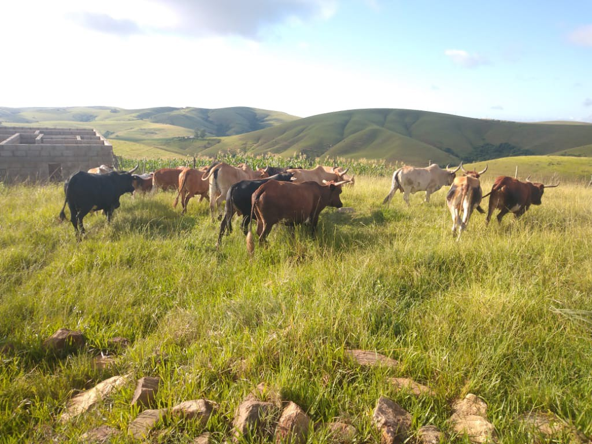
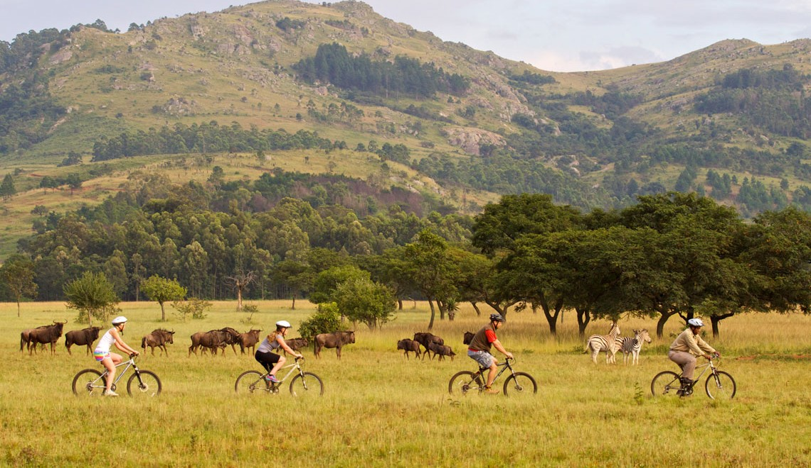

01
Background
About Me
My name is Mangaliso Linda Dlamini (FYI, that's not the Spanish Linda. From my native language, it means to be patient).
I am a Computing student at the African Leadership College in Mauritius. I am a humble, noble lad and probably will be quietest guy in the room.
About Home
I come from a community called Mcengeni in the Hhohho district of Eswatini. A humble community that stands on a mountainous area which makes for a great scenery. Like most rural communities in the kingdom, it is survived by subsistence farming.
Eswatini (formerly Swaziland) is Africa's last absolute monarchy, albeit, there is an ongoing political unrest that is posing a challenge to monarchical rule. Otherwise, the country is known for its strong cultural values and mountainous landscapes. It has some fascinating artefacts including the second largest rock in the world, Sibebe Rock and is home to the wildlife big five (lion, leopard, elephant, buffalo, and rhino).

Main livestock for subsistence farmers

Wildlife at Mlilwane Wildlife Reserve
Before ALU
Having overachieved in my local primary schools, Elubhaceni Primary School, my parents so it fit to send me to one of the top high schools in
the country. As such I was privileged to attend Manzini Nazarene High School. Five years later I graduated and went on to enrol at the
University of Eswatini, Kwaluseni Campus. By the time I left to join ALU, I had completed 2 years for a BSc in Information Technology
02
ALU Journey
To ALU
I wanted to learn more about ALA, ALU’s sister institution which had visited my high school a few years ago. However, being at a tertiary institution, ALA offerings seemed a step back. So, I randomly searched African Leadership University on Google, which lead me to the ALU website. I read their mission and vision, and few articles which had more insight in what their goals are. All of it appealed to me. Then I hit the apply button.
The application process was an intense process. While I was itching to be part of ALU and its mission, it seemed remote that I would making cut, and moreover be awarded a scholarship. So, at every stage of the application I was used to say to myself how far can I go beyond? Amazingly, I went all the way.
While the stars looked to be aligning, coronavirus was making rounds across the world. Lockdowns in my home country made it difficult to get certain documents which were required particularly for visa application. And travel restriction, in Mauritius caused a delay from a September start date to a January start date.
In ALU
Due to a travel ban on South Africa, a country which I was supposed to transit through, my journey to Mauritius had a 16-day isolation period in Rwanda. That where I meet the other students from South Africa, Lesotho and Botswana. I arrived on campus after over two weeks since the other students’ arrival. Generally, ALU students were wilder than I expected. Coming from campus that sees roughly five thousand students per day, the ALU campus in Mauritius still feels very small.
ALU classes were different than what I had experienced before. They were longer than the classes from my former university. However, the have activities such group discussion and class discussions which made them more engaging and interactive.
Advice to Perspective Students
I would advise prospective students that the ALU journey will often seem different and very intense even with the application process, but it very much worth it
03
Mauritius Experience
I arrived in Mauritius in the middle of a coronavirus pandemic. The Island had one of the strictest quarantine regulations. Soon after completing the quarantine period, a lockdown was imposed for three months which limited my experiences of the Island. Nevertheless, I have been to some beautiful place such as Pont Natural and Le Bouchon beach. I have also enjoyed a few sunsets over the Indian Ocean at the beach.
Well Mauritius is hot, and rainfall may come at any given time without much warning. Such makes it difficult to enjoy the weather. I also had trouble with the food and the fact that Mauritians lean more towards French than English. Otherwise I have enjoy being in Mauritius.
04
Social
In ALU, we do hard things, but there is also time reserved for having fun. From time to time, we find time for kicking about in our
mini football pitch. It’s always a fun way to break a sweat. There’s also clubs and society within campus that allow us to
appreciate the diversity in the ALU community.
With fellow students from the Southern African region, we try to replicate the feeling of home. We
organise get together occassions just like the ones we had with our families back home.

Cooking with fire, the Southern African way
05
Ideas for the Future
The idea is to either go for a masters in Cyber security or to work towards earning professional ethical hacking certificates.
The aim is to use the knowledge and experience to create and strength cybersecurity frameworks and policies in my country.
In my home country, most students still encounter computer science for the first time in tertiary education. As such, very
few students consider a computer science career. So I aim to run a program that will introduce students to computer science while
in secondary school or even primary school
06
A Little more about me
I love sports except for American sports, I am still struggling to understand most of them. Though I have never played for official teams,
I have had the chance to try football and cricket in my backyard and in the streets. I actually played volleyball in high school and won a few medals.